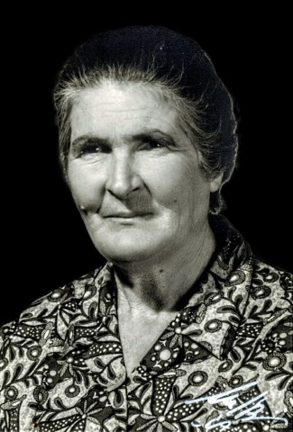

Hommage à Rosina SCIONI
29.10.1903 - 14.07.1977

Le Jardin des Étoiles de Juillet
Il était une fois, dans un petit village niché entre les collines et le ciel, une femme nommée Rosina. Rosina n'était pas une femme comme les autres ; elle possédait le don secret de faire fleurir la tendresse partout où elle passait. Dans son sillage, les rires semblaient plus clairs et les chagrins un peu moins lourds.
Le 14 juillet 1977, alors que la terre entière célébrait la lumière et les étincelles dans le ciel, Rosina sentit un appel différent. Ce n'était pas un adieu, mais plutôt une invitation. Elle comprit que son voyage ici-bas était accompli et qu'un nouveau jardin l'attendait, un jardin où les fleurs ne fanent jamais.
On raconte que ce soir-là, alors que les premiers feux d'artifice éclataient en bouquets d'or et d'argent, Rosina gravit un escalier de lumière. À chaque marche, elle laissait derrière elle un souvenir précieux :
Un sourire offert à un étranger.
La chaleur d'une main tenue.
La sagesse de ses mots doux.
Lorsqu'elle atteignit le sommet, elle ne disparut pas. Elle devint la plus brillante des étoiles de l'été. On dit que depuis ce jour, chaque 14 juillet, lorsque le ciel s'illumine, ce n'est pas seulement pour la fête des hommes. C'est aussi pour saluer Rosina, qui veille sur ceux qu'elle a aimés.
Elle n'est plus là où elle était, mais elle est partout où ils sont. Elle est dans le souffle du vent de juillet, dans l'éclat des roses de son jardin, et surtout, dans le silence aimant du cœur de ceux qui ne l'ont jamais oubliée.